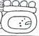
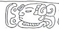
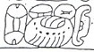
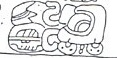
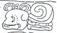
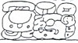

| A1 | Distance Number: 1 K'ins, 2 Winals u-to-ma | |
| B1 | Calendar Round: 11 Ahaw 18 Chen | |
| A2a | TAN-LAM Half-period ending | |
| A2b |  | Tzolk'in: 9 K'awak' |
| B2 | Haab: 17 Yaxk'in |
| C1 |  | u na-ka-wa "he attacked" |
| D1 | ta-b'a KIMI-mi "rope death" | |
| C2 |  | ko-b'a-na Ahaw "Lord of Kob'an" |
| D2 |  | B'alah Chan K'awiil |
| E1a | K'uhul Mutal Ahaw "Holy Lord of Mutul" | |
| E1b | yi-ta-hi "in the company of" | |
| F1 |  | ya-???-??? |
| E2 |  | K'a-la-wa BALAM Ahaw "K'alaw Jaguar Lord" |
| F2 | u-ti-ya ma?-mu-hu "it happened at ????" |